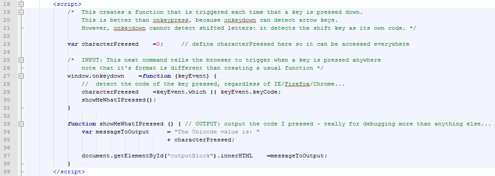
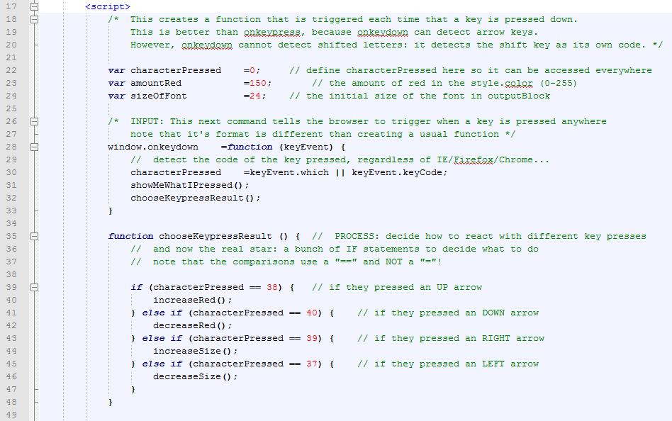
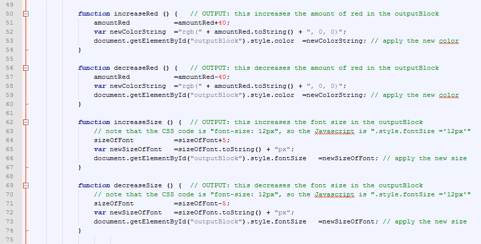

Sniffing keystrokes
In the Javascript events lesson, you were able to read the keystrokes as they were entered into a text box.
This worked by using code like: <input type="text" id="inputLine" onkeypress="doSomeFunction(event);">
But that only worked when you had the cursor in the text box. For many things, like controlling games, you want to have the keyboard react no matter where the cursor is.
Ok - show me how to read the keyboard at all times

Read through the code carefully... Then click here to run the example.
Different keys for different results
Great - now you have the browser reacting to the keyboard no matter what else is going on. But wouldn't it be nice if different keys did different things? To make that happen we need to run different code in different situations. In other words, we need to use if statements.
Let's apply IF statements to our previous example:

Adjusting styles with javascript
Let's create a paragraph with an id="testParagraph":
<p id="testParagraph">Adjustable text</p> makes:
Adjustable text
Changing color with Javascript
We can now use javascript to adjust the color of this paragraph
document.getElementById("testParagraph").style.color="Red"; makes:
Adjustable text
We can also be more specific about the color by specifying it not as a color name, but by the amount of red, green, and blue in the color we want:
document.getElementById("testParagraph").style.color="rgb(0,0,255)"; makes:
Adjustable text
Changing font size with Javascript
You can use javascript to change the font size of an element:
document.getElementById("elementID").style.fontSize ="30px";
Adjustable text
Now lets add style change functions to our example:

Read through the code carefully... Then experiment with the example below:
Press a key! Go ahead!
Use the following keys to make things happen:
- ↑ makes things more red
- ↓ makes things less red
- ← makes the font size smaller
- → makes the font size bigger
Saving your work
Download the template and rename it to your last name, such as "1.15S-KeyboardControl-LastName.html".
The assignment
Look at the template, and fill in the differences between the template and the code in the examples above.
There are many places that say someThingToChange. Change these to the real code to get the template to work.
Get it running, and then feel free to modify it. I would attack your code in stages:
- Get the program reading keystrokes and using
showMeWhatIPressed()to display the key code - Get the
if (statements working correctly - Get the program increasing and decreasing the font size using
increaseSize()anddecreaseSize - Get the program increasing and decreasing the amount of red using
increaseRed()anddecreaseRed
Extend and expand
Can you modify the code to speed up and slow down amount of colour & font size change with each keystroke?
Can you figure out how to use keyboard control to toggle the boldness of the font using document.getElementById("outputBlock").fontWeight="bold"?
How about using keyboard control to toggle the italic of the font using document.getElementById("outputBlock").fontStyle="italic"?
Can you figure out how to use keyboard control to change the size of an image using document.getElementById("imageID").width="200px"?